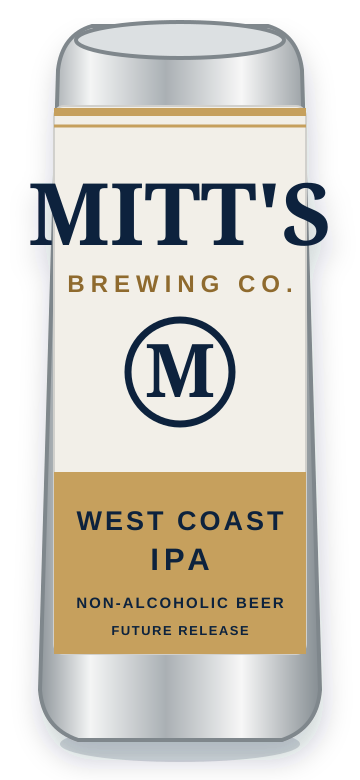
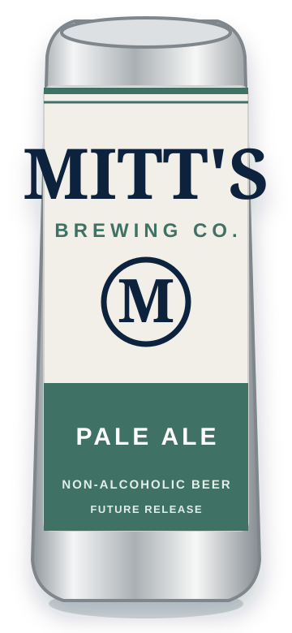

Launch release
Premium Lager
Crisp, clean and easygoing, with a dry finish designed for everyday occasions.
60 cal · 3 g carbs · 1 g sugar · 355 mL
View Premium LagerWe are starting with the beer that leaves nowhere to hide: a clean, crisp premium lager in a 355 mL silver can. Future releases will follow the same disciplined approach.
Crisp, clean and easygoing, with a dry finish designed for everyday occasions.
60 cal · 3 g carbs · 1 g sugar · 355 mL
View Premium Lager
A clear, bitter and aromatic non-alcoholic IPA concept with classic West Coast structure.
Final product details to be confirmed.

Balanced, bright and approachable—planned as the easy middle ground in the Mitt's range.
Final product details to be confirmed.
A lager cannot hide behind sweetness, fruit or heavy bitterness. It has to be balanced, refreshing and worth reaching for again. That is the standard we want attached to Mitt's from day one.
Meet the first releaseJoin the list for release dates and first stockist announcements.